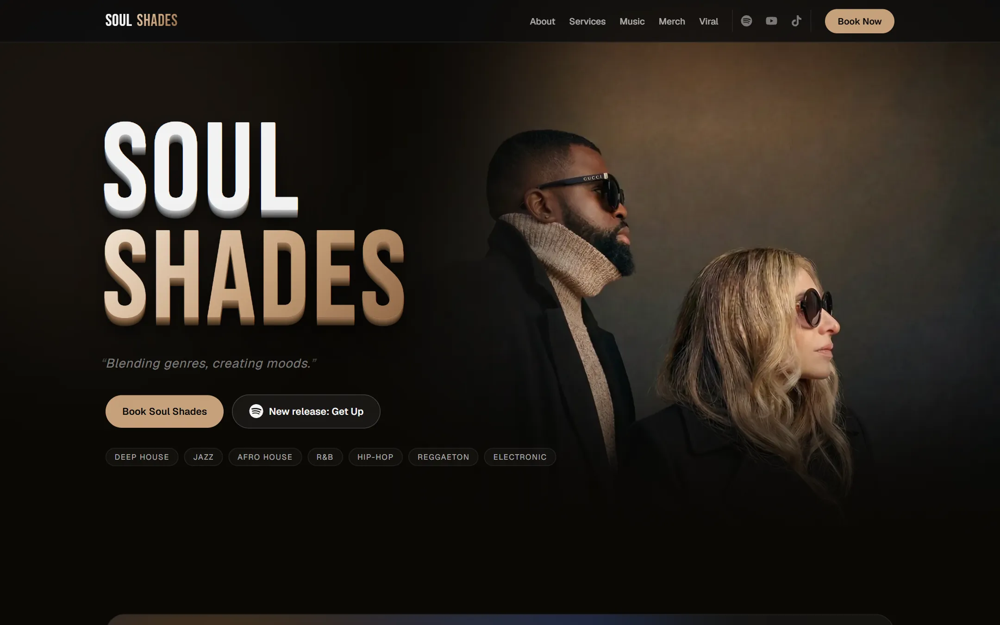
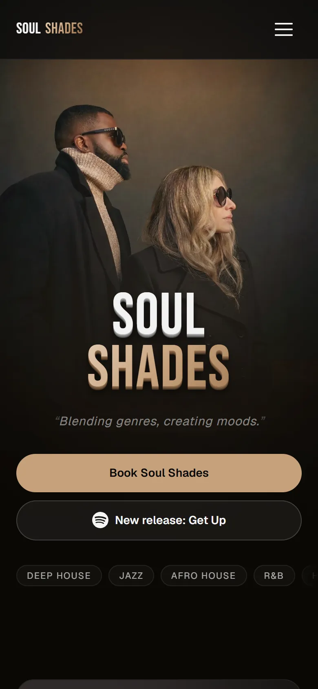

The site runs on a near-black with a fine grain, which suits stage photos and a duo that plays at night. Gold is held back on purpose. It appears only on the wordmark, the main actions, prices, and whichever track is playing, so it always means something. The wordmark is set in Bebas Neue, the body in Barlow Condensed, and Instrument Serif adds a softer accent for quotes. Every animation has a reduced-motion version.
One early bug was easy to miss: the hero heading read "Soul Soul Shades Shades" to screen readers and search engines, because the raised 3D edge on the letters was made from a duplicate copy of each word. The edge is now drawn entirely in CSS, so the heading says what it should.

The booking dialog asks for what the duo needs to quote, then sends a branded email through Resend. Spam is filtered with a hidden honeypot field, a minimum time to fill the form, and a list of known sales pitches, and if the main form ever fails, a backup service still delivers the inquiry. When the dialog closes, keyboard focus goes back to the button that opened it. Starting prices are listed openly in the FAQ, so inquiries arrive already knowing the range.
Proof matters for corporate work, so two events have their own write-ups with photos, video, and quotes: the Contentsquare CX Circle at The Glasshouse, with more than 1,000 guests, and NautaDutilh at 620 Loft & Garden. Two landing pages target the searches that bring in that work: a DJ and violin duo in NYC, and corporate event entertainment in NYC.

Fans can preview 45 seconds of each track, then pay what they want, with a $3 minimum per track, through Stripe. Files are delivered from storage after payment, and a visitor can turn any track into a 1,080 by 1,920 Story image drawn right in the browser. The Get Up release has its own page, with a countdown to its December 18 release and motion artwork that fades in over the cover.
Most of the work here was making it safe. The first version let the browser tell the server which files were being bought, so an edited request could have bought any file in the storage bucket for $3. Now the server decides. Orders of four or more tracks failed because the file list hit Stripe's 500-character limit on order data. The buyer's email was showing up in the address bar after checkout, and Stripe retries could send duplicate emails. Each of these is fixed, and checkout now shows Soul Shades branding even though the duo shares a Stripe account with DJ DX.
React sites often show search engines and AI crawlers an empty page, because the content only appears after JavaScript runs. Every route here is prerendered to real HTML at build time, and pages that don't exist return a real 404 instead of a blank page that says 200. The structured data connects the duo, both members, their services and starting prices, 14 recordings, the event write-ups, and the FAQ under one ID, with my own profile as the site's creator.
The site also runs a small MCP server, a standard way for AI assistants to use a website directly. An assistant can read the duo's facts and prices and send a booking inquiry on someone's behalf, limited to five inquiries per connection per hour. New pages are submitted to Bing through IndexNow, but only after the live site is confirmed to be serving the new version.
Soul Shades needed one site that books corporate work, sells music to fans, and launches a release, without any of the three getting in the way of the others. Most of the effort went into the parts nobody sees: a store that can't be tricked, pages that search engines and AI tools can actually read, and a booking form that filters out noise before it reaches the duo.
Visit the live site ↗